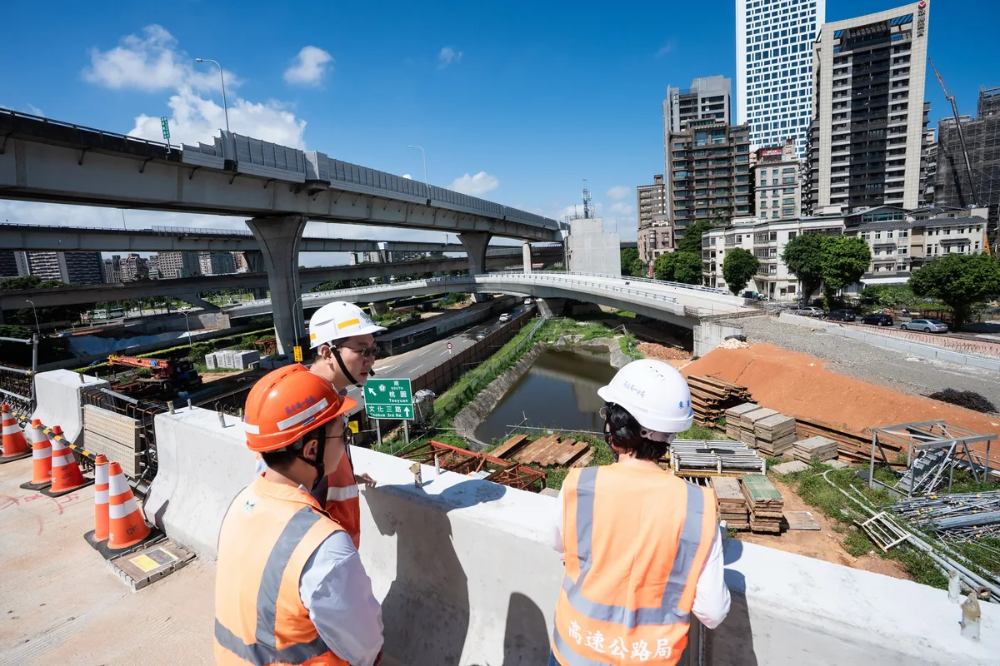
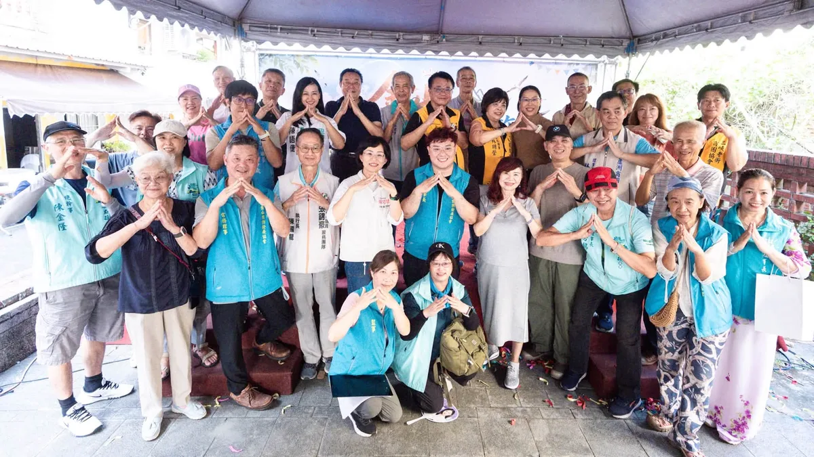

蘇巧慧su.chiaohui
@su.chiaohui:我支持✨遊戲宜居城市！ 我會以孩子的95公分視角，重新檢視並改善公共空間，也會打造適合青少年的戶外遊憩空間！讓新北成為兒少快樂成長、大膽探索的城市！
Accounts
| 平台 | 帳號 | 已收錄貼文 | 最後更新 |
|---|---|---|---|
| 官網 | https://chiao.tw/ | 28 | 2026-08-29 00:00 |
| https://www.facebook.com/chiaohui.su | 93 | 2026-08-30 15:28 | |
| https://www.instagram.com/su.chiaohui/ | 106 | 2026-08-31 22:07 | |
| YouTube | https://www.youtube.com/channel/UCBybqVtDU2YgADc8tBqUz5A | 65 | 2026-08-31 15:09 |
| LINE 官方帳號 | http://line.me/ti/p/%40suchiaohui | 0 | — |
| Threads | https://www.threads.com/@su.chiaohui | 135 | 2026-08-31 22:10 |
| Podcast | https://open.spotify.com/show/06fXdjNXspAe1QLML8EsAv | 5 | 2026-08-27 15:00 |
Timeline
顯示 432 / 432 則
@su.chiaohui:我支持✨遊戲宜居城市！ 我會以孩子的95公分視角，重新檢視並改善公共空間，也會打造適合青少年的戶外遊憩空間！讓新北成為兒少快樂成長、大膽探索的城市！
新時代 新市長！精美掛布出爐，招募願意讓我們懸掛的店家和地點✨ 最近好多朋友敲碗，想幫我在社區或是店家宣傳打氣。大家的心聲，我們聽到了！ 全新 #新時代新市長 應援掛布登場！不管是掛在家門口、陽台、店面，還是辦公室都好看，歡迎大家登記成為巧慧應援掛布的新家，為我加油打氣！ 搶先前往以下連結登記👇 https://forms.gle/tvsxe9fm3X3mk4po9 一起讓支持新世代的力量，在新北每個角落都被看見！

開學囉！上週特別到團膳廚房關心孩子們吃得好不好🤩 我們從環境清潔、食材挑選、烹煮到供餐，親自瞭解每一個細節。 我在今年一月提出 #國中小免費營養午餐，從這學期開始正式上路！未來，我會持續精進校園供餐品質，包含升級 #食安設備、鼓勵 #國產食材、推廣 #食農教育 等等，讓新北的孩子吃得健康、安全又美味！

@su.chiaohui:來三重和孩子們一起同樂 打造友善育兒的新北市！ 這幾天，我接連參加李倩萍、顏蔚慈議員舉辦的親子活動，和孩子一起看精彩的《蟲蟲馬戲樂園》，還一起在公園玩超有趣的泡泡，大家真的都玩瘋了！ 最開心的是，一到現場就聽到好多孩子大喊「水獺媽媽！」還主動跟我打招呼、擊掌，大家都有認真聽故事、學台語喔！ 我會繼續帶著新北隊努力，為大家打造更友善育兒家庭的新北市！

敢去就有路！巧慧帶大家一起迎接新時代！ 非常感謝今天爆場的客家鄉親給我支持和力量，更感謝金曲歌后 #米莎 特別到現場獻唱 ，給我祝福。 在米莎的金曲 #腳跡 中有一句歌詞「敢去就有路。」聽了真的特別有感觸。從一開始宣布參選新北市長，到今天最後倒數90天，我和大家一起前進，也越來越多人站出來和我們並肩前行。 今天我和大家報告我們的客家政見： ✅廣入校園社區，推廣客語及技藝課程 ✅擴大辦理 #客家信仰文化活動，挹注客家文史團體和地方社團 ✅媒合產業 #跨域合作，舉辦以客家為主體的商展和影展 ✅盤點低利用公有空間，提供客家青年更多新創孵育基地 ✅結合新科技，打造「客家文化AI資料庫」、「新北AI客語學習平台」 ✅擴大 伯公照護站設置，客家幣使用範圍 最後階段，我們一起拚，一起讓新北市迎接新時代！

9/5（六）新北競選總部正式成立 做伙來挺巧慧！ 謝謝每位市民朋友這一路來的支持與鼓勵，讓我更有動力繼續向前衝。 現在，我想邀集所有希望新北進步的力量，一起迎接新時代、打造更好的新北市！ 9月5日，誠摯邀請大家來板橋第一運動場，和 賴清德總統、 蔡英文 Tsai Ing-wen 小英總統，以及 陳其邁 Chen Chi-Mai市長一起，共同見證我的新北競選總部正式成立！ 現場還有金曲歌后 詹雅雯 Y.W ，以及大家熟悉的《 #粉紅超跑》 #林姍 帶來精彩演出，歡迎各位好朋友一起共襄盛舉，為巧慧加油！ 新北市的下一步，需要我們並肩同行。 讓新世代扛起新時代，2026新北慧贏！ 2026蘇巧慧新北競選總部成立大會 📅 9/5（六）14:30進場 📍 板橋第一運動場運動廣場（板橋區漢生東路278號）
週六行程滿檔！打造新北觀光品牌 活絡商圈老街經濟！ 今天都在新北跑透透！上午我來到淡水、八里和各區商圈協會的好朋友們請益，中午也前往「板橋扶輪家族九社聯合例會」，與扶輪社友們交流，敬佩大家投入國內外的公益服務、熱心做慈善的付出，也和大家分享我的市政願景。隨後又趕往金山參加「山海生活節」，用行動支持老街商圈，享用在地好吃的美食。 我也向商圈夥伴們報告，未來將以 #預算加倍 為目標，投入更多資源協助商圈行銷、轉型與發展，帶動商機與人潮！ ✅ 補助提升三倍 商圈補助從每年600萬元提高至1800萬元。 ✅ 優化軟硬體建設 改善人行空間、公共設施與大眾運輸規劃，打通前往商圈的最後一哩路。 ✅ 成立專家業師商圈總輔導團 協助商圈規劃特色、申請活動、改善設備，提升城市行銷與觀光效益。 ✅ 舉辦城市級特色活動 串聯商圈、景點與在地文化，讓新北各區有特色、每季有活動。 我會繼續努力，讓新北各區的商圈更熱鬧，也讓新北市珍貴的山海美景被更多人看見！

中央挹注80億！#五股交流道增設北入匝道 預計今年十月提前通車！ 今天我和 @hou.yuih 侯友宜市長、@realeliotyli 李宇翔議員一起前往視察國道1號五股、林口交流道改善工程。感謝中央大力支持新北交通建設，兩項工程中央一共挹注80億元！ 去年十月，五股交流道北出匝道就已經提前通車，在中央、地方大力合作、第一線施工團隊日夜努力之下，#北入匝道 也預計在今年十月 #提前半年通車！未來可由台65線直接高架銜接國道1號，大幅緩解在地居民的塞車之苦。 大家關心的 #林口交流道改善工程 也在全力推進中，未來隨著國1南下主線拓寬、匝道增設、箱涵立體化，分流車輛外也降低事故風險，行車更順暢安全！ 未來，還有金城交流道、汐止交流道、中和交流道，以及五泰林地區的五泰輕軌 、林口輕軌許多重大建設都要繼續加速推進。中央、地方一起努力，一步步打造更便捷完整的新北交通路網。

@su.chiaohui:「巧志工」熱烈招募中！✨ 走過一場又一場的活動，每次站上舞台，最讓我安心的，永遠是場邊那群默默忙碌的志工身影。 這群巧志工夥伴們陪我穿梭新北各區，是因為大家和我一樣對新北充滿期待！ 剩下不到一百天的時間，我們需要更多夥伴，一起衝刺，為彩色的新北努力！ 誠摯邀請你加入「巧志工」，一起讓新北因你而改變。 🔗 巧志工熱血登記表單： https://forms.gle/RtzN8XVeMhNv1bs27

Playing Pickleball with Shen Po-yang!

我支持 #遊戲宜居城市！ 我會以孩子的 #95公分視角，重新檢視並改善公共空間，也會打造適合青少年的戶外遊憩空間！讓新北成為兒少快樂成長、大膽探索的城市！

@su.chiaohui:開學囉！上週特別到團膳廚房關心孩子們吃得好不好！我們從環境清潔、食材挑選、烹煮到供餐，親自瞭解每一個細節。 我在今年一月提出✨國中小免費營養午餐，從這學期開始正式上路！未來，我會持續精進校園供餐品質，包含升級食安設備、鼓勵國產食材、推廣食農教育等等，讓新北的孩子吃得健康、安全又美味❤️

@su.chiaohui:巧慧當市長 提高預算！做勞工家庭後盾！ 非常感謝超過一百個工會團體相挺為我成後援會，過去十年，我們一起在立法院推動各項法案修訂，一步步改善勞動環境。 大家在各行各業努力打拚，共同締造了台灣的經濟繁榮，因此未來我擔任市長，將會提高勞工相關預算，而且不只💛照顧勞工，更要💛照顧工會、💛照顧勞工家庭！ 全力做新北超過216萬勞工朋友的後盾，讓大家都能在新北安居樂業，一起迎接新北的新時代！

來三重和孩子們一起同樂 打造友善育兒的新北市！ 這幾天，我接連參加 #李倩萍、 #顏蔚慈 議員舉辦的親子活動，和孩子一起看精彩的《蟲蟲馬戲樂園》，還一起在公園玩超有趣的泡泡，大家真的都玩瘋了！ 最開心的是，一到現場就聽到好多孩子大喊「水獺媽媽！」還主動跟我打招呼、擊掌，大家都有認真聽故事、學台語喔！ 除了陪伴孩子長大，我也要做爸爸媽媽最可靠的隊友。未來，我要打造95公分視角城市，從孩子的高度重新檢視公共空間，也會推動0到6歲看病免門診及住院部分負擔、6歲以下腸病毒及輪狀病毒疫苗免費，並增加 夜間托育、建置 臨時托育查詢平台，讓育兒家庭有更大的支持。 我也會和倩萍、蔚慈一起努力，推動 「三重2.0」，加速第二行政中心、市圖第二總館、三重聯醫第三醫療大樓等重大建設；在蘆洲推動蘆南和蘆北重劃區、蘆社大橋，緊盯捷運北環段工程進度。 我會繼續帶著新北隊努力，為大家打造更友善育兒家庭的新北市！

敢去就有路！巧慧帶大家一起迎接新時代！ 非常感謝今天爆場的客家鄉親給我支持和力量，更感謝金曲歌后 米莎 Misa特別到現場獻唱 ，給我祝福。 在米莎的金曲 #腳跡 中有一句歌詞「敢去就有路。」聽了真的特別有感觸。從一開始宣布參選新北市長，到今天最後倒數90天，我和大家一起前進，也越來越多人站出來和我們並肩前行。 今天我和大家報告我們的客家政見： ✅廣入校園社區，推廣客語及技藝課程 ✅擴大辦理 #客家信仰文化活動，挹注客家文史團體和地方社團 ✅媒合產業 #跨域合作，舉辦以客家為主體的商展和影展 ✅盤點低利用公有空間，提供客家青年更多新創孵育基地 ✅結合新科技，打造 #客家文化AI資料庫、#新北AI客語學習平台 ✅擴大 #伯公照護站設置，#客家幣使用範圍 最後階段，我們一起拚，一起讓新北市迎接新時代！

@su.chiaohui:9/5（六）新北競選總部正式成立 做伙來挺巧慧！ 謝謝每位市民朋友這一路來的支持與鼓勵，讓我更有動力繼續向前衝。 現在，我想邀集所有希望新北進步的力量，一起迎接新時代、打造更好的新北市！ 9月5日，誠摯邀請大家來板橋第一運動場，和 @william_chingte 賴清德總統、 @tsai_ingwen 蔡英文小英總統，以及 @chenchimai 陳其邁市長一起，共同見證我的新北競選總部正式成立！ 現場還有金曲歌后詹雅雯，以及大家熟悉的《 #粉紅超跑》林姍帶來精彩演出，歡迎各位好朋友一起共襄盛舉，為巧慧加油！ 新北市的下一步，需要我們並肩同行。 讓新世代扛起新時代，2026新北慧贏！ 2026蘇巧慧新北競選總部成立大會 📅 9/5（六）14:30進場 📍 板橋第一運動場運動廣場（板橋區漢生東路278號）

週六行程滿檔！打造新北觀光品牌 活絡商圈老街經濟！ 今天都在新北跑透透！上午我來到淡水、八里和各區商圈協會的好朋友們請益，中午也前往「板橋扶輪家族九社聯合例會」，與扶輪社友們交流，敬佩大家投入國內外的公益服務、熱心做慈善的付出，也和大家分享我的市政願景。隨後又趕往金山參加「山海生活節」，用行動支持老街商圈，享用在地好吃的美食。 我也向商圈夥伴們報告，未來將以 #預算加倍 為目標，投入更多資源協助商圈行銷、轉型與發展，帶動商機與人潮！ ✅ 補助提升三倍 商圈補助從每年600萬元提高至1800萬元。 ✅ 優化軟硬體建設 改善人行空間、公共設施與大眾運輸規劃，打通前往商圈的最後一哩路。 ✅ 成立專家業師商圈總輔導團 協助商圈規劃特色、申請活動、改善設備，提升城市行銷與觀光效益。 ✅ 舉辦城市級特色活動 串聯商圈、景點與在地文化，讓新北各區有特色、每季有活動。 我會繼續努力，讓新北各區的商圈更熱鬧，也讓新北市珍貴的山海美景被更多人看見！

民生資訊 週六行程滿檔！打造新北觀光品牌 活絡商圈老街經濟！ 我也向商圈夥伴們報告，未來將以預算加倍為目標，投入更多資源協助商圈行銷、轉型與發展，帶動商機與人潮！ 2026.08.29

「巧志工」熱烈招募中！✨ 走過一場又一場的活動，每次站上舞台，最讓我安心的，永遠是場邊那群默默忙碌的志工身影。 這群巧志工夥伴們陪我穿梭新北各區，是因為大家和我一樣對新北充滿期待！ 剩下不到一百天的時間，我們需要更多夥伴，一起衝刺，為彩色的新北努力！ 誠摯邀請你加入「巧志工」，一起讓新北因你而改變。 🔗 巧志工熱血登記表單： https://forms.gle/RtzN8XVeMhNv1bs27 🔔歡迎到我的臉書，直接點擊連結！

TEAM TAIWAN 拓荒探險隊第三彈角色曝光！ 猜猜看這次登場的是誰？沒錯，就是大家最熟悉的 #水獺媽媽✨ 這次我和民進黨的縣市長候選人們化身「TEAM TAIWAN 拓荒探險隊」，和大家走遍全台各地。水獺媽媽帶著大聲公和滿滿裝備出發，一起從淡江大橋、野柳一路探索到九份，把新北的交通建設、山海美景、特色老街通通走一遍！ 新北有山、有海，更有29區各自精彩的地方特色。未來，我要推動 #新皇冠海岸、#鑽石山城 觀光政見，整合山海、老街、商圈、漁港等豐富資源，打造屬於新北自己的觀光品牌，讓更多國內外旅客愛上新北市，也讓市民以自己的城市為榮。 從交通、產業、觀光，到居住環境、教育和照顧，我會繼續帶著「溫暖、創新、會做事」的精神，用創新方法打造更好的新北市，讓建設持續進步、生活品質一起升級。 下一個登場的會是哪位角色呢👀 一起期待接下來的驚喜吧！
@su.chiaohui:新時代 新市長！精美掛布出爐，招募願意讓我們懸掛的店家和地點✨ 最近好多朋友敲碗，想幫我在社區或是店家宣傳打氣。大家的心聲，我們聽到了！ 全新「新時代新市長」應援掛布登場！不管是掛在家門口、陽台、店面，還是辦公室都好看，歡迎大家登記成為巧慧應援掛布的新家，為我加油打氣！ 搶先點擊以下連結登記👇 https://forms.gle/tvsxe9fm3X3mk4po9 一起讓支持新世代的力量，在新北每個角落都被看見！
School's back! A look inside the school lunch kitchen: Are the kids eating well?

巧慧當市長 提高預算！做勞工家庭後盾！ 非常感謝超過一百個工會團體相挺為我成後援會，過去十年，我們一起在立法院推動各項法案修訂，一步步改善勞動環境。 大家在各行各業努力打拚，共同締造了台灣的經濟繁榮，因此未來我擔任市長，將會 #提高勞工相關預算，而且不只照顧勞工，更要照顧工會、照顧勞工家庭，全方位做大家的後盾！ ✅ 巧慧挺勞工 1. 調升職災慰問金、勞資爭議涉訟補助 2. 加碼補助高溫防暑設備 3. 擴大推動 #多元職訓、職務再設計，支持中高齡再就業 4. 獎勵資深人才加入青創團隊擔任創業教練 ✅ 巧慧挺工會 1. 改善工會辦公空間 2. 調高職業工會行政事務費、會務經費 3. 建立市府與工會 #直接對話機制 ✅ 巧慧挺家庭 1. 國中小免費營養午餐 2. 0-6歲 #免門診與住院部分負擔 3. 早產兒3萬元照顧津貼 4. 鼓勵 #企業組隊設托，友善職場獎勵金最高100萬元 5. 長輩假牙補助最高5萬元 6. 敬老卡升級 巧慧當市長，會全力做新北超過216萬勞工朋友的後盾，讓大家都能在新北安居樂業，一起迎接新北的新時代！

@su.chiaohui:「敢去就有路。」 就像金曲歌后米莎在〈腳跡〉中的歌詞一樣，我們從一開始宣布參選新北市長，到今天最後倒數90天，我和大家一路一起前進，也越來越多人站出來和我們並肩前行。 最後階段，我們一起衝，一起帶領新北市迎接新時代。
9/5（六）新北競選總部正式成立 做伙來挺巧慧！ 謝謝每位市民朋友這一路來的支持與鼓勵，讓我更有動力繼續向前衝。 現在，我想邀集所有希望新北進步的力量，一起迎接新時代、打造更好的新北市！ 9月5日，誠摯邀請大家來板橋第一運動場，和賴清德總統、蔡英文小英總統，以及陳其邁市長一起，共同見證我的新北競選總部正式成立！ 現場還有金曲歌后詹雅雯，以及大家熟悉的《 #粉紅超跑》 林姍帶來精彩演出，歡迎各位好朋友一起共襄盛舉，為巧慧加油！ 新北市的下一步，需要我們並肩同行。 讓新世代扛起新時代，2026新北慧贏！ 2026蘇巧慧新北競選總部成立大會 📅 9/5（六）14:30進場 📍 板橋第一運動場運動廣場（板橋區漢生東路278號）

@su.chiaohui:週六行程滿檔！打造新北觀光品牌 活絡商圈老街經濟！

@su.chiaohui:今天我和 @hou.yuih 侯友宜市長、@realeliotyli 李宇翔議員一起前往視察國道1號五股、林口交流道改善工程。感謝中央大力支持新北交通建設，兩項工程中央一共挹注✨80億元！ 去年十月，五股交流道北出匝道就已經提前通車，在中央、地方大力合作、第一線施工團隊日夜努力之下，北入匝道也預計在今年十月✨提前半年通車！未來可由台65線直接高架銜接國道1號，大幅緩解在地居民的塞車之苦。 大家關心的「林口交流道改善工程」也在全力推進中，未來隨著國1南下主線拓寬、匝道增設、箱涵立體化，分流車輛外也降低事故風險，行車更順暢安全！ 中央、地方一起努力，一步步打造更便捷完整的新北交通路網！

[Otter Mom's Little Talks] Can I Be Your Dog? | Adopt Don't Shop | Animal Friendly | Children's P...

「巧志工」熱烈招募中！✨ 走過一場又一場的活動，每次站上舞台，最讓我安心的，永遠是場邊那群默默忙碌的志工身影。 這群巧志工夥伴們陪我穿梭新北各區，是因為大家和我一樣對新北充滿期待！ 剩下不到一百天的時間，我們需要更多夥伴，一起衝刺，為彩色的新北努力！ 誠摯邀請你加入「巧志工」，一起讓新北因你而改變。 🔗 巧志工熱血登記表單： https://forms.gle/RtzN8XVeMhNv1bs27

TEAM TAIWAN 拓荒探險隊第三彈角色曝光！ 猜猜看這次登場的是誰？沒錯，就是大家最熟悉的 #水獺媽媽✨ 這次我和民進黨的縣市長候選人們化身「TEAM TAIWAN 拓荒探險隊」，和大家走遍全台各地。水獺媽媽帶著大聲公和滿滿裝備出發，一起從淡江大橋、野柳一路探索到九份，把新北的交通建設、山海美景、特色老街通通走一遍！ 新北有山、有海，更有29區各自精彩的地方特色。未來，我要推動 #新皇冠海岸、#鑽石山城 觀光政見，整合山海、老街、商圈、漁港等豐富資源，打造屬於新北自己的觀光品牌，讓更多國內外旅客愛上新北市，也讓市民以自己的城市為榮。 從交通、產業、觀光，到居住環境、教育和照顧，我會繼續帶著「溫暖、創新、會做事」的精神，用創新方法打造更好的新北市，讓建設持續進步、生活品質一起升級。 下一個登場的會是哪位角色呢👀 一起期待接下來的驚喜吧！